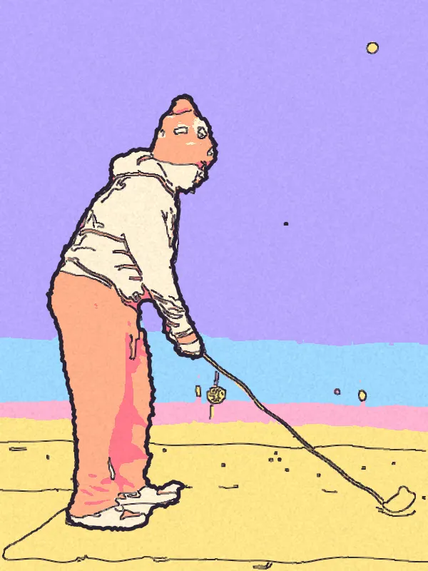

EXTROPIAN · SEP 2024 — MAY 2025
From a swing to a signal.
Turning a stream of wearable sensor data into useful, real-time feedback.
Feedback while it matters.
At Extropian, I worked on a cross-platform Flutter app that analyzed golf swing metrics from wearable sensor data. The app delivered feedback in real time, rather than making the user wait until the session was over.
Keep the signal flowing.
I led the Bluetooth data streaming layer and swing metric calculations. That work cut packet loss from tens to single digits per session, enabling more dependable, low-latency feedback.
sensorBluetooth
streamFlutter app
& metrics
The team used Git and Jira to coordinate work across six people.
A closer look at the motion.
For this portfolio, I ran my own swing through a MediaPipe pose model and paired the data with stylized video frames. This is a separate visual study, not a screenshot of the production wearable app.

The overlay is illustrative 2D pose tracking. Perspective, occlusion, and estimated club positions limit precision. It should not be read as calibrated biomechanics or a measured performance score.
The part I carried forward.
Real-time feedback depends on the quality of the path from the sensor to the interface. The streaming layer deserves as much care as the visible result.